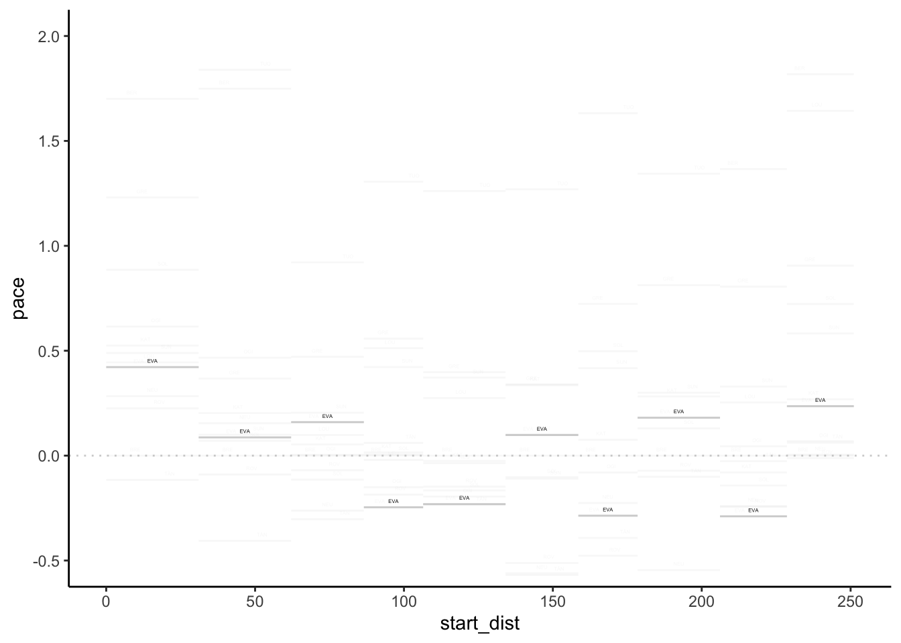
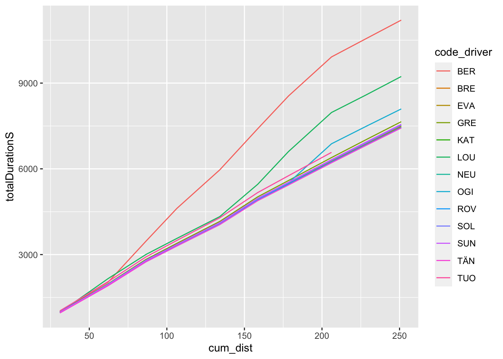
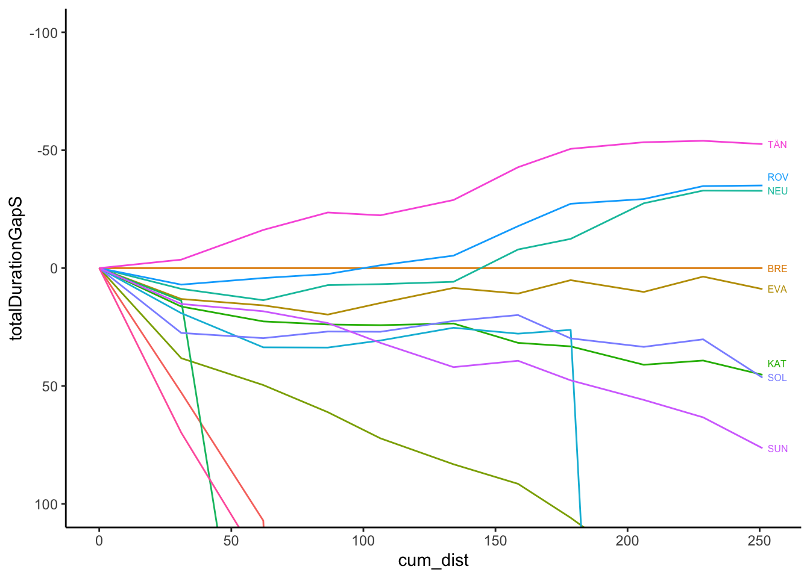
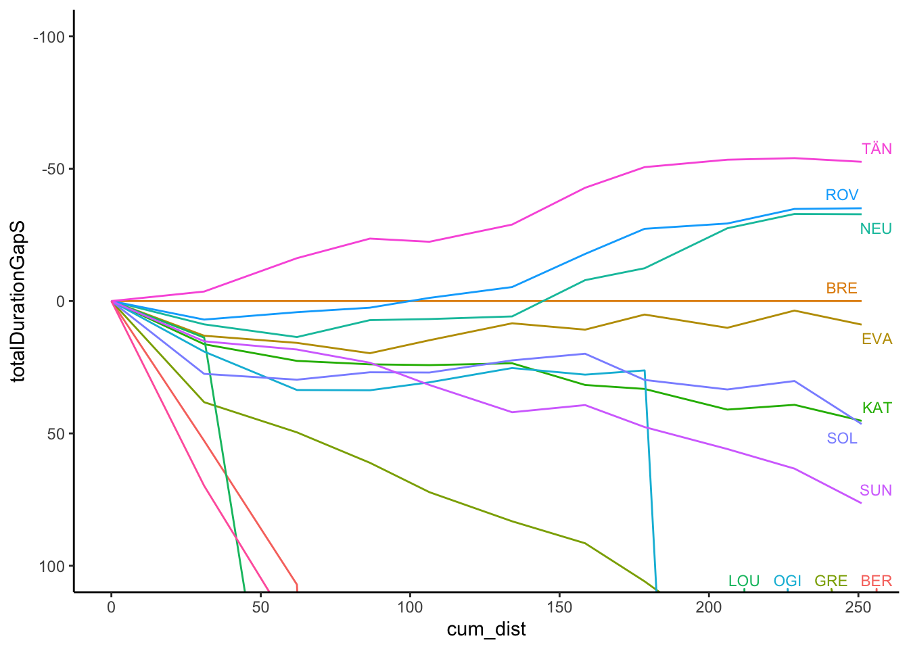
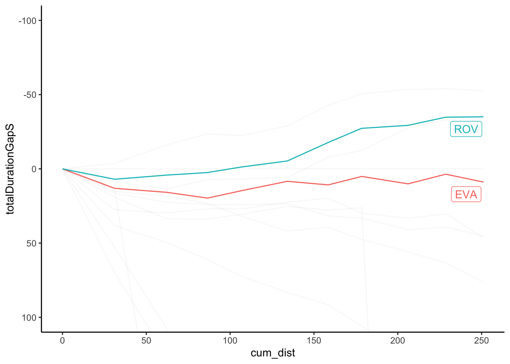

5 Finding Pace Across Stages
Average speed on a rally is all very well, but it’s not the most useful of metrics for making sense of what’s actually going on in a rally. Far more useful is the notion of pace the reciprocal of a speed like measure, that tells you how many seconds it’s taking each driver to cover one kilometer.
Knowing the pace allows you to make more direct comparisons between drivers, as well as simplifying rule of thumb calculations, like what sort of pace advantage a driver needs to make up the 2s to the leader over the remaining 100 kilometers available in the final four stages…
In this chapter, we look at some simple pace calculations, rebase pace values relative to a specified driver, and explore a couple of ways of visualising differential pace over the course of a rally in the form of pace maps and off-the-pace charts.
5.1 Load Base Data
To get the stage data from a standing start, we can load in the current season list, select the rally we want, look up the itinerary from the rally, extract the sections and then the stages, and from that access the stage ID for the stage or stages we are interested in.
Load in the helper functions:
source('code/wrc-api.R')And get the base data:
s = get_active_season()
eventId = get_eventId_from_name(s, 'arctic')
itinerary = get_itinerary(eventId)
sections = get_sections(itinerary)
stages = get_stages(sections)
stages_lookup = get_stages_lookup(stages)
# Driver details
cars = get_car_data(entries)Get a sample stage ID:
stageId = stages_lookup[['SS3']]5.2 Defining Pace
With variable stage distances on a stage rally, metrics such as average speed provide one way of comparing performances across stage, calculated as \(\textrm{stage_time}/\textrm{stage_distance}\) with units of kilometers or miles per hour.
A more useful measure, particularly in rally terms, is the notion of pace, typically given with units of seconds per kilometer. Speed tells us much quickly a car covers distance in unit time; pace gives us an indication of how much time is required to travel a unit distance.
When used as a rebased difference measure between drivers, pace difference allows us to rapidly calculate how much time a driver is likely to gain or lose over a particular stage distance as per the word equation \(\textrm{time_gain}=\textrm{stage_distance}\cdot\textrm{pace_difference}\).
Basic pace itself is given as \(\textrm{pace}=\textrm{time}/\textrm{distance}\).
Developing our rally algebra, we might identify the stage distance for stage \(S\) as \(d_S\). For a stage time by driver \(i\) of \({_S}t_i\) the stage pace \({_S}p_i\) for driver \(i\) on stage \(S\) is then given as:
\[ {_S}p_i = \frac{{_S}t_i}{d_S} \]
5.3 Calculating Stage Pace
We can calculate stage pace from stage times and stage distances.
We can find stages distances directly from the stages dataframe:
stages %>% select(c('code','distance')) %>% head(3)## code distance
## 1 SS1 31.05
## 2 SS2 31.05
## 3 SS3 24.435.3.1 Calculating Pace for a Single Stage
Let’s start by looking a single stage using a recipe we have used before:
# Example stage code
stage_code = 'SS3'
stageId = stages_lookup[[stage_code]]
# Get the stage distance
stage_distance = stages[stages['code']==stage_code, 'distance']
# Get driver metadata
cars = get_car_data(entries)
# Create stage times with merged in driver metadata
stage_times = get_stage_times(eventId, stageId) %>%
arrange(position) %>%
head(10) %>%
# Merge in the entries data
merge(cars, by='entryId') %>%
# Convert milliseconds to seconds
mutate(TimeInS = elapsedDurationMs/1000) %>%
# Limit columns and set column order
select(c('position', 'identifier',
'code', 'TimeInS')) %>%
# The merge may upset the row order
# so reset the order again
arrange(position) %>%
# Improve column names by renaming them
rename(Pos=position,
Car = identifier,
Code = code,
`Time (s)` = TimeInS)
formattable(stage_times )| Pos | Car | Code | Time (s) |
|---|---|---|---|
| 1 | 8 | TÄN | 834.5 |
| 2 | 11 | NEU | 835.5 |
| 3 | 2 | SOL | 839.1 |
| 4 | 69 | ROV | 840.2 |
| 5 | 42 | BRE | 841.9 |
| 6 | 1 | OGI | 842.0 |
| 7 | 18 | KAT | 843.2 |
| 8 | 7 | LOU | 844.3 |
| 9 | 33 | EVA | 845.8 |
| 10 | 3 | SUN | 846.9 |
We can now calculate pace as the stage time divided by the stage distance:
stage_times$pace = stage_times$'Time (s)' / stage_distance
stage_times## Pos Car Code Time (s) pace
## 1 1 8 TÄN 834.5 34.15882
## 2 2 11 NEU 835.5 34.19975
## 3 3 2 SOL 839.1 34.34711
## 4 4 69 ROV 840.2 34.39214
## 5 5 42 BRE 841.9 34.46173
## 6 6 1 OGI 842.0 34.46582
## 7 7 18 KAT 843.2 34.51494
## 8 8 7 LOU 844.3 34.55997
## 9 9 33 EVA 845.8 34.62137
## 10 10 3 SUN 846.9 34.666395.3.2 Calculating Pace for Multiple Stages
First, let’s get the data for all the stages:
stage_list = get_stage_list(stages)
multi_stage_times = get_multi_stage_times(stage_list)
multi_stage_times %>% tail(2)## stageTimeId stageId entryId elapsedDurationMs elapsedDuration status
## 539 96810 1749 21571 1301693 00:21:41.6930000 Completed
## 540 96793 1749 21541 NA <NA> DNS
## source position diffFirstMs diffFirst diffPrevMs diffPrev
## 539 Default 52 699224 00:11:39.2240000 153590 00:02:33.5900000
## 540 Default NA NA <NA> NA <NA>We can generate the pace by adding the stage distance as an extra column and performing the pace calculation.
We’ll also take the opportunity to merge in driver metadata and limit cars to WRC group entries:
multi_stage_pace = multi_stage_times %>%
merge(stages[,c('stageId' ,'distance',
'number', 'code')],
by='stageId') %>%
mutate(elapsedDurationS = elapsedDurationMs / 1000,
pace = elapsedDurationS / distance) %>%
merge(cars[,c('entryId','drivername',
'code', 'groupname')],
by='entryId',
suffixes=c('','_driver')) %>%
filter(groupname=='WRC') %>%
select(c('stageId', 'number', 'code_driver',
'elapsedDurationS', 'pace', 'code')) %>%
arrange(number, elapsedDurationS)
multi_stage_pace %>% head(3)## stageId number code_driver elapsedDurationS pace code
## 1 1747 1 TÄN 957.8 30.84702 SS1
## 2 1747 1 BRE 961.4 30.96296 SS1
## 3 1747 1 ROV 968.4 31.18841 SS1Create a mapping from stage ID to stage codes and cast the ordered list of stage Ids to an ordered list of stage codes:
# Create a stage code mapping function
stages_lookup_code = get_stages_lookup(stages, 'stageId', 'code')
stage_code_map = function(stageId)
stages_lookup_code[[as.character(stageId)]]
# Map stage ID column names to stage codes
stage_codes = unlist(purrr::map(stage_list,
function (x) stage_code_map(x)))
stage_codes## [1] "SS1" "SS2" "SS3" "SS4" "SS5" "SS6" "SS7" "SS8" "SS9" "SS10"Use the generic widener function to widen the pace dataframe to give the pace for each driver on each stage:
pace_wide = get_multi_stage_generic_wide(multi_stage_pace,
stage_codes, 'pace',
# Unique group keys required
# Driver code not guaranteed unique
group_key=c('code_driver'),
spread_key='code')
pace_wide %>% head(3)## # A tibble: 3 x 11
## # Groups: code_driver [3]
## code_driver SS1 SS2 SS3 SS4 SS5 SS6 SS7 SS8 SS9 SS10
## <chr> <dbl> <dbl> <dbl> <dbl> <dbl> <dbl> <dbl> <dbl> <dbl> <dbl>
## 1 BER 32.7 32.8 58.7 57.6 48.8 58.8 57.7 49.3 28.7 28.6
## 2 BRE 31.0 31.1 34.5 27.7 27.3 34.8 28.0 28.1 27.3 26.8
## 3 EVA 31.4 31.2 34.6 27.5 27.1 34.9 27.8 28.3 27.0 27.15.4 Rebasing Stage Pace
We can rebase the stage pace according to a specific driver:
example_driver = pace_wide[2,]$code_driver
pace_wide_rebased = rebase(pace_wide, example_driver, stage_codes,
id_col='code_driver')
pace_wide_rebased %>% head(3)## # A tibble: 3 x 11
## # Groups: code_driver [3]
## code_driver SS1 SS2 SS3 SS4 SS5 SS6 SS7 SS8 SS9
## <chr> <dbl> <dbl> <dbl> <dbl> <dbl> <dbl> <dbl> <dbl> <dbl>
## 1 BER 1.70 1.75 24.3 29.9 21.4 24.0 29.7 21.1 1.37
## 2 BRE 0 0 0 0 0 0 0 0 0
## 3 EVA 0.422 0.0870 0.160 -0.246 -0.231 0.0982 -0.286 0.181 -0.289
## # … with 1 more variable: SS10 <dbl>More abstractly, the rebased pace, \({_S}p_i^j\), for driver \(i\) relative to driver \(j\) on stage \(S\) is given as:
\[ {_S}p_i^j = {_S}p_i - {_S}p_j = \frac{{_S}t_i - {_S}t_j}{d_S} = \frac{{_S}t_i^j}{d_S} \]
5.5 Visualising Stage Pace Using Pace Maps
To compare pace, it is useful to look at rebased pace times relative to a particular driver and also indicate the length of stage with which particular pace levels are associated.
We can do this with a chart that presents distance into stage along the horizontal x-axis and relative pace on the y axis, using a line to indicate the pace for each driver relative to a specified driver.
One of the easiest way of plotting charts is to plot from a tidy dataframe, so let’s cast the rebased wide pace dataframe back to a long form and also add in the distance into stage at the start and end of each stage:
library(tidyr)
stage_range = c(start=stage_codes[1],
end=stage_codes[length(stage_codes)])
stages$cum_dist = cumsum(stages$distance)
stages$start_dist = c(0, stages$cum_dist[-length(stages$cum_dist)])
pace_long = pace_wide_rebased %>%
gather(code, pace,
stage_range['start']:stage_range['end']) %>%
merge(stages[,c('code', 'start_dist', 'cum_dist')],
by='code')
pace_long %>% head(3)## code code_driver pace start_dist cum_dist
## 1 SS1 BER 1.7004831 0 31.05
## 2 SS1 BRE 0.0000000 0 31.05
## 3 SS1 EVA 0.4219002 0 31.05We can now construct a chart using line segments to represent the pace for each driver on each stage:
library(ggplot2)
g0 = ggplot(pace_long, aes(group=code_driver)) +
geom_hline(yintercept = 0,
colour='lightgrey', linetype='dotted') +
geom_segment(aes(x=start_dist, xend=cum_dist,
y=pace, yend=pace),
color = 'lightgrey')
g = g0 + geom_text(aes(x=(start_dist+cum_dist)/2,y=pace+0.03,
label=code_driver,group=code_driver),
position = position_dodge(15), size=1) +
ylim(-0.5,2) + theme_classic()
gWe could highlight positive and negative differences in the label colourings:
g0 + geom_text(aes(x=(start_dist+cum_dist)/2,
y=ifelse(pace>0,pace+0.03,pace-0.03),
label=code_driver,group=code_driver,
color=pace>0),
position = position_dodge(15), size=1) +
ylim(-0.5,2) + theme_classic() + theme(legend.position="none")
We can also highlight values for a particular driver:
g + geom_segment(data=pace_long[pace_long$code_driver=='EVA',],
aes(x=start_dist, xend=cum_dist,
y=pace, yend=pace, color = pace>0)) +
theme(legend.position="none")
Or abuse the gghiglight package to modify the aesthetics of unselected items:
g + gghighlight::gghighlight(code_driver=='EVA',
unhighlighted_params=list(alpha=0.1))
Alternatively, abuse gghighlight() again with a negative form of selection to highlight items:
g + gghighlight::gghighlight(code_driver!='EVA',label_key=code_driver,
unhighlighted_params=list(color='blue'))
We could even add a transparency layer bar to highlight the pace difference compared to a particular driver:
g + geom_rect(data=pace_long[pace_long$code_driver=='EVA',],
aes(xmin=start_dist, xmax=cum_dist,
ymin = ifelse(pace>0,0,pace),
ymax = ifelse(pace>0,pace,0),
fill = pace>0, alpha=0.7)) +
theme(legend.position="none")
To highlight stages, we could add a “banner” to the chart:
g + geom_rect(data=pace_long[pace_long$code_driver==example_driver,],
aes(xmin=0, xmax=max(cum_dist),
ymin = 1.8, ymax = 2.0,
alpha=0), fill = 'black') +
geom_text(data=pace_long[pace_long$code_driver==example_driver,],
aes(x=(cum_dist + start_dist)/2, label=code),
y=1.9, color='yellow', size=3) +
geom_segment(data=pace_long[pace_long$code_driver==example_driver,],
aes(x=cum_dist, xend=cum_dist,
y=1.8, yend=2.0), color='yellow') +
theme(legend.position="none")
5.6 Off-the-Pace Charts
Another way or reviewing pace is to consider the gap to leader, or rebased gap to a particular driver across the stages, using distance into stage along the x-axis to locate the x-value and gap (measured in seconds) along the y-axis. A moment’s consideration suggests that the gradient (\(\textrm{change_in_gap}/\textrm{change_in_distance}\)) is a measure of pace. The slope of the line thus indicates relative pace between the focal driver and the other drivers.
As with the pace map, if we have the data in a long, tidy form, we can create charts from it quite straightforwardly. So let’s add in the accumulated distance into stage and accumulated stage time for each time:
off_the_pace = multi_stage_pace %>%
merge(stages[,c('stageId', 'cum_dist')],
by='stageId') %>%
arrange(number) %>%
group_by(code_driver) %>%
mutate(totalDurationS = cumsum(elapsedDurationS))
off_the_pace %>% head(3)## # A tibble: 3 x 8
## # Groups: code_driver [3]
## stageId number code_driver elapsedDurationS pace code cum_dist
## <int> <int> <chr> <dbl> <dbl> <chr> <dbl>
## 1 1747 1 TÄN 958. 30.8 SS1 31.0
## 2 1747 1 BRE 961. 31.0 SS1 31.0
## 3 1747 1 ROV 968. 31.2 SS1 31.0
## # … with 1 more variable: totalDurationS <dbl>Now we can create a basic off-the pace chart:
ggplot(off_the_pace, aes(x=cum_dist, y=totalDurationS,
color=code_driver)) + geom_line()
As with the pace map, the chart is often most informative if we rebase it relative to a particular driver.
Let’s create a wide dataframe to simplify the rebasing process:
off_the_pace_wide = get_multi_stage_generic_wide(off_the_pace,
stage_codes, 'totalDurationS',
group_key=c('code_driver'),
spread_key='code')
off_the_pace_wide %>% head(3)## # A tibble: 3 x 11
## # Groups: code_driver [3]
## code_driver SS1 SS2 SS3 SS4 SS5 SS6 SS7 SS8 SS9 SS10
## <chr> <dbl> <dbl> <dbl> <dbl> <dbl> <dbl> <dbl> <dbl> <dbl> <dbl>
## 1 BER 1014. 2034 3468. 4615. 5965. 7402. 8551. 9915. 10560 11204.
## 2 BRE 961. 1927. 2769. 3320. 4077. 4928. 5486. 6266. 6880. 7482.
## 3 EVA 974. 1943. 2788. 3335. 4085. 4939. 5492. 6276. 6883. 7491.Now we can rebase:
off_the_pace_wide_rebased = rebase(off_the_pace_wide,
example_driver, stage_codes,
id_col='code_driver')
off_the_pace_wide_rebased %>% head(3)## # A tibble: 3 x 11
## # Groups: code_driver [3]
## code_driver SS1 SS2 SS3 SS4 SS5 SS6 SS7 SS8 SS9 SS10
## <chr> <dbl> <dbl> <dbl> <dbl> <dbl> <dbl> <dbl> <dbl> <dbl> <dbl>
## 1 BER 52.8 107. 700. 1295. 1888. 2474. 3065. 3650. 3680. 3.72e3
## 2 BRE 0 0 0 0 0 0 0 0 0 0.
## 3 EVA 13.1 15.8 19.7 14.8 8.4 10.8 5.1 10.1 3.6 8.90e0And cast back to the long, tidy form:
off_the_pace_long = off_the_pace_wide_rebased %>%
gather(code, totalDurationGapS,
stage_range['start']:stage_range['end']) %>%
merge(stages[,c('code', 'cum_dist')],
by='code')
off_the_pace_long %>% head(3)## code code_driver totalDurationGapS cum_dist
## 1 SS1 BER 52.8 31.05
## 2 SS1 BRE 0.0 31.05
## 3 SS1 EVA 13.1 31.05And now we can plot the simple rebased off-the-pace chart:
g_otp = ggplot(off_the_pace_long, aes(x=cum_dist, y=totalDurationGapS,
color=code_driver)) +
geom_line() +
# Retain the points outside the limits
# We can also flip the coordinate axis
coord_cartesian(ylim=c(100, -100)) + theme_classic()
g_otp
Trivially, we might try to add labels at the end of each line:
off_the_pace_end = off_the_pace_long %>% filter(cum_dist == max(cum_dist))
g_otp + geom_text(data = off_the_pace_end,
aes(x = cum_dist+ 10, y = totalDurationGapS,
label = code_driver, color = code_driver)) +
theme(legend.position="none") However, there are various other packages that provide alternative ways of doing this, including
However, there are various other packages that provide alternative ways of doing this, including directlabels and ggrepel.
For example, using directlabels:
library(directlabels)
g_otp +
geom_dl(aes(label = code_driver, x=cum_dist+2),
# cex is text label size
method = list('last.bumpup', cex = 0.5)) +
theme(legend.position="none")
And using ggrepel, which also has the advantage of adding labels for drivers who curves are really of the pace, albeit not in an obviously natural order:
g_otp + ggrepel::geom_text_repel(data = off_the_pace_end,
aes(label = code_driver),
size = 3) +
theme(legend.position="none")
The gghighlight package is also useful in highlighting traces, as well as usefully automatically labeling highlighted lines:
g_otp +
gghighlight::gghighlight(code_driver=='EVA',
unhighlighted_params=list(alpha=0.1)) +
theme(legend.position="none")## label_key: code_driver